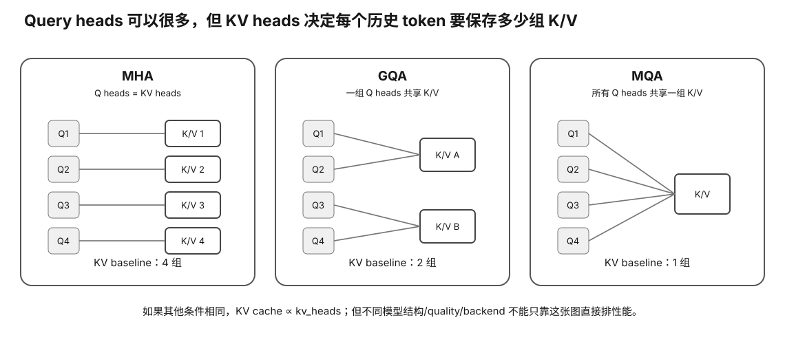

Transformer Anatomy · L0→L1
MHA → MQA → GQA：为什么减少 KV heads 能直接改变显存与 Decode 成本？
Attention head 数不是模型配置表里的装饰。Query heads 与 KV heads 的关系会直接决定 KV cache 的尺寸、decode 时读多少历史数据，以及模型如何在质量和推理效率之间取舍。
Prerequisite Check
你应知道 decode 每生成一个 token，会为新位置生成 Q/K/V，并读取历史 KV cache。
真实问题：两个参数量接近的模型，为什么同样 32k context，一个 KV cache 明显更小？
其中一个重要原因可能是 KV head 数不同。MHA 通常每个 query head 都有自己的 K/V；MQA 让多个 query heads 共用一组 K/V；GQA 介于两者之间，让一组 query heads 共享一个 KV head。
1. Multi-Head Attention：为什么需要多个 head？
把 hidden representation 投影成多个较小的 Q/K/V head，可以让模型在不同子空间学习不同关系。粗略写：
Q = X Wq K = X Wk V = X Wv head_i = softmax(Q_i K_i^T / sqrt(d)) V_i
最后多个 head 拼接/投影回 hidden size。

kv_heads 成正比。2. MHA 的 KV cache 成本
decode 时历史 query 不需要保存，但历史 K/V 需要保存。因此 KV bytes 的主要结构可以写成：
KV bytes ≈ 2 (K and V) × layers × context_tokens × kv_heads × head_dim × bytes_per_element × concurrent_sequences
这里最关键的是 kv_heads，不是 query heads。
3. MQA：所有 query heads 共享一组 K/V
many Q heads ↓ ↓ ↓ ↓ one shared K head one shared V head
这样 KV cache 可以大幅减少，decode 每 token 读取的 KV 数据也更少。代价是模型表达能力/训练行为可能变化，因此这是模型架构设计，不是推理时随便开一个开关。
4. GQA：在 MHA 与 MQA 之间折中
Grouped-Query Attention 让若干 query heads 共享一个 KV head：
Q Q Q Q | Q Q Q Q | Q Q Q Q share K/V share K/V share K/V
它保留多个 KV groups，比单一 MQA 更有表达容量，同时显著减少相对 MHA 的 KV cache。
Worked Example：同一 hidden/head_dim，KV heads 从 32 降到 8
假设其他都相同：
MHA: kv_heads = 32 GQA: kv_heads = 8 KV cache ratio = 8 / 32 = 1/4
仅从结构公式看，KV cache 对应部分约降到四分之一。真实总显存不会也变四分之一，因为模型权重、runtime buffer 等不变。
5. 为什么 GQA 对长 context/并发尤其重要？
KV cache 随 context 和并发近似线性增长。减少 KV heads 的节省会被长上下文和多 slot 放大。
single 4k chat → KV may be modest 32k × several sessions → KV becomes major capacity budget
这也是为什么服务端模型架构越来越关注 KV efficiency。
6. Decode memory traffic
每个新 query 要与历史 K/V 交互。更少 KV heads 除了节省容量，也可能减少需要从 memory hierarchy 读取的 KV 字节。具体 kernel 能节省多少取决于 layout、cache、fusion 与实现。
7. 为什么不能在两个不同模型之间说“GQA 一定更快”？
如果模型 hidden size、层数、参数量、quant、runtime 都不同，GQA 只是多个变量中的一个。要证明 GQA 因果收益，需要可比较模型或明确实验设计；否则只能说“该模型的 KV structure 更节省”。
8. 从 config 里读什么？
常见字段思想：
- hidden size；
- num attention heads；
- num key-value heads；
- head dimension（有时可由 hidden/heads 推出，但不要对所有新架构强推）；
- layers；
- context / rope / sliding behavior。
用这些字段先做 KV hypothesis，再去 runtime 实测 allocation。
Why it matters
- 直接影响长 context 和并发的内存预算。
- 解释参数量相似模型为什么实际 serving capacity 不同。
- 帮助你读模型 config，而不是只看“7B/14B/70B”。
- 为 paged KV、KV quant、sliding attention 与 serving capacity 打基础。
常见误区
- “attention heads 越多 KV 一定越大”——要看 KV heads。
- “GQA 是 runtime 优化开关”——通常是模型架构的一部分。
- “KV 省 4 倍，总显存就省 4 倍”——权重等其他部分不变。
- “MQA/GQA 一定不掉质量/一定更快”——模型设计与 kernel 决定。
小实验
选择两个公开模型 config，手算每 token 每层的 K/V 元素数量，再按 4k/32k context 和 1/4 并发做比例预算。只比较结构，不填虚构 runtime allocation。
预期观察：KV heads 的差异会在线性 context/concurrency 维度被放大。
无 GPU 路径
本课纯计算即可。以后真机再用 runtime memory logs 验证公式与实际 overhead 的差距。
排错
- 公式与实际显存不符：确认 KV dtype、padding/alignment、paged allocation、runtime buffer、sliding window。
- config 没有显式 head_dim：查模型架构文档，不盲推。
- 长 context OOM：分别拆 weights、KV、buffers，不只降 quant。
Retrieval Practice
- 为什么 KV cache 主要取决于 KV heads 而不是 query heads？
- MHA、MQA、GQA 三者的共享关系是什么？
- KV heads 从 32 到 8 为什么只说明 KV 部分约四分之一，而不是总显存？
- 为什么 GQA 节省在长 context/高并发更重要？
- 从模型 config 做 KV 预算至少需要哪些字段？
- 为什么跨两个完全不同模型不能把速度差直接归因给 GQA？
Decision Rule
在模型容量/服务规划时，用 exact layers × KV heads × head dim × context × dtype × concurrency 估算 KV；不要从总 attention heads 或参数量猜。模型间性能差异只有在控制其他变量后才可归因 GQA/MQA。
Transfer
下一步学习 sliding/hybrid/latent attention 时，继续问两个问题：历史状态到底保存什么？每个新 token 必须读取多少历史字节？
Worked Budget：把 KV-head 差异变成真实容量问题
假设一个 32 层模型，head dimension 128，context 32768，KV 使用 2 bytes/element。只比较 KV-head 数：
KV bytes = 2 × 32 × 32768 × kv_heads × 128 × 2
如果 kv_heads 从 32 降到 8，公式中只有这一项变化，因此 KV 部分严格按 1/4 缩放。注意：这是 KV cache 的结构比例，不是整机显存占用比例；weights、allocator、runtime buffers 都还在。
从 Config 到 Evidence 的四步
- 从 exact config 读取 query heads、KV heads、head dimension/layers；
- 按目标 context、KV dtype、sequence 数做预算；
- 在目标 runtime 上记录实际 KV allocation / memory delta；
- 若预算与实测不符，再调查 padding、paging、hybrid attention、allocator 与额外 buffers。
第 2 步是模型，第 3 步是现实。不要为了让公式“看起来对”而忽略 runtime 差异。
Experiment Evidence
对同一模型做 context sweep 时固定 artifact、runtime、KV dtype、offload、concurrency，只改变 context。保存 predicted KV、observed memory 与 TG/latency。没有 GPU 时只完成 predicted worksheet，并标明 MEASURED = NONE。
Interpretation Branches
- 预测 KV 低、实际显存高：先分 weights/buffers/allocator，不要说公式错误。
- GQA 模型 TG 更高：只能描述该 stack；不能把所有差异归因 GQA。
- context 增长 memory 近似线性：与传统 full-KV 模型一致，但仍要检查 paging/padding。
- memory scaling 非线性：调查 sliding/hybrid/latent、allocator block 与 backend policy。
What this lesson does NOT prove
减少 KV heads 是架构级 tradeoff，不是用户运行时随便改的优化开关。本节也不证明 MQA/GQA 在所有质量任务上等价于 MHA；质量来自训练后的 exact model，需要独立评估。
完成证据
完成本课后，保留一份 learner-owned completion artifact，至少包含：
- 用自己的话画出或写出本节最小 mental model，并标出关键变量/资源层；
- 完成本节小实验、worksheet 或无硬件 fallback；有真机时链接 raw Evidence，没有真机时明确标 L0 / DOCUMENTED / DEFERRED-HARDWARE；
- 写一条绑定 Evidence 的 PASS / FAIL / UNKNOWN / BLOCKED 结论，说明它怎样影响本地 LLM 的容量、性能、兼容、成本或风险判断；
- 写一句明确 non-claim：这份证据还不能证明什么。
只写“看完了”或抄规格表不算完成。课程要的是可复查的推理产物，而不是阅读打卡。